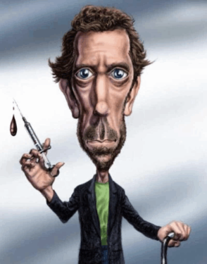

Especialista en Diagnóstico Médico | Jefe del Departamento de Diagnóstico en el Hospital Princeton-Plainsboro
Soy un médico brillante y poco convencional con una capacidad excepcional para resolver los casos médicos más complejos. Con un enfoque basado en la lógica, la observación y la deducción, he dedicado mi carrera a diagnosticar enfermedades raras que otros no pueden. Mi estilo de trabajo puede ser poco ortodoxo, pero los resultados hablan por sí mismos.
Experiencia en el tratamiento de enfermedades infecciosas complejas y condiciones renales críticas.
Lidero un equipo de médicos especialistas en la resolución de los casos más difíciles y en el diagnóstico de enfermedades poco comunes.